miniCycle User Manual
Getting Started
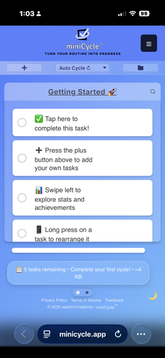
Welcome to miniCycle! This user manual will guide you through the features and functionalities of the app.
miniCycle is a routine manager that handles your repeatable tasks differently than traditional to-do apps. Most task managers treat each task as a one-off item and collect your personal data. miniCycle is different — it's a privacy-focused workflow tool that organizes your tasks into routines. When you complete all your tasks, the cycle is completed and they automatically reset so you can tackle them again. It's perfect for daily routines, weekly goals, and recurring habits.
- Click the + button to add a task or create a new routine
- Check off tasks as you complete them
- When all tasks are completed, the routine automatically resets (in Auto Cycle mode)
- Swipe left/right to switch between Task View and Stats Panel
Managing Tasks
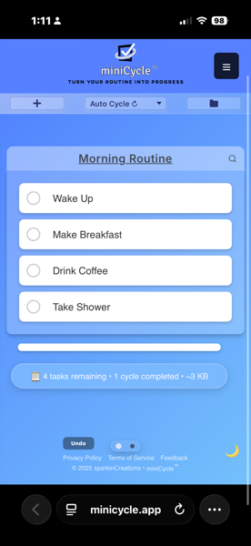
Adding Tasks
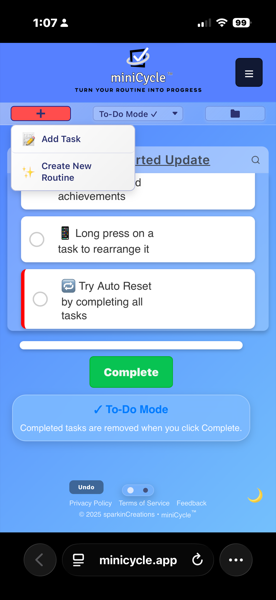
Click the + button and select "Add Task" from the menu. Enter your task name and it will appear at the bottom of your list.
Reordering Tasks
Drag and drop tasks to reorder them, or use the move arrows if enabled. Your preferred order is saved automatically.
High Priority Tasks
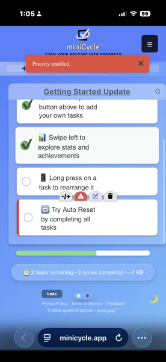
Mark important tasks with the priority button. Priority tasks display a red left border to help you focus on what matters most.
Due Dates
- Set due dates for time-sensitive tasks
- Due dates appear as badges below the task name
- Overdue tasks are highlighted
Reminders
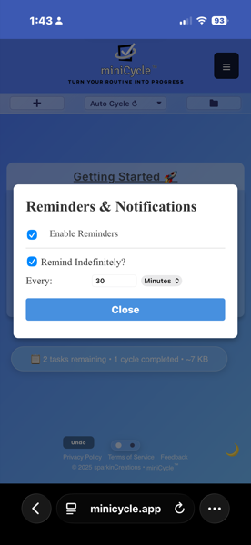
Enable reminders to get browser notifications about pending tasks. Make sure your browser allows notifications from miniCycle.
Recurring Tasks
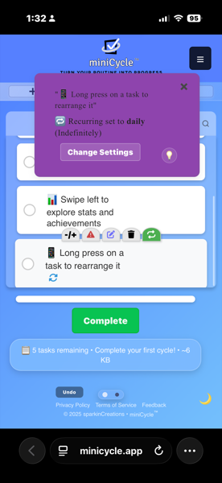
Set up tasks that repeat automatically:
- Hourly: Reappears every hour
- Daily: Reappears every day
- Weekly: Reappears every week
- Biweekly: Reappears every two weeks
- Monthly: Reappears every month
- Yearly: Reappears every year
- Specific dates: Choose exact dates for the task to appear
Cycle Modes
miniCycle offers three different modes for how your routines behave:
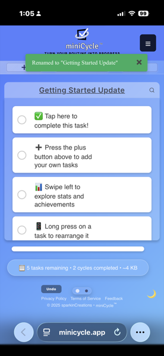
Auto Cycle Mode
When enabled, all tasks automatically reset to incomplete once you finish everything. This is perfect for daily routines and recurring habits. Your cycle count increases with each completion.
Manual Cycle Mode
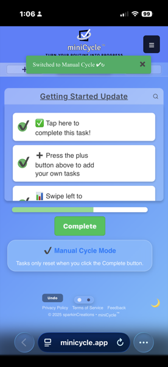
Complete all tasks, then click the "Complete" button when you're ready to reset. This gives you time to review before starting a new cycle.
To-Do Mode
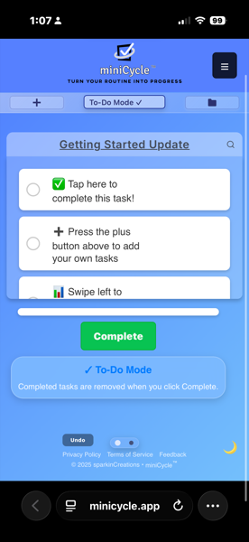
Completed tasks are deleted instead of reset. Works like a traditional to-do list — perfect for one-time tasks, shopping lists, or projects.
Managing Routines
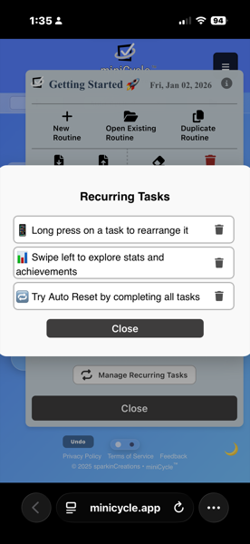
Create different routines for different areas of your life:
- Work Tasks: Professional to-dos and projects
- Home Routine: Household tasks and maintenance
- Fitness Goals: Exercise routines and health habits
- Study Plan: Learning objectives and skill development
Routine Switcher
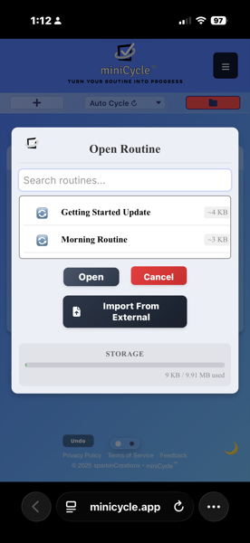
Access the routine switcher through the folder icon or hamburger menu (☰) → "Open Existing Routine":
- Browse and select from your existing routines
- Preview routine contents before switching — tasks appear in a preview window when you select a routine
- Rename or delete routines using the action buttons
- See storage usage for each routine
Creating New Routines
Click the + button and select "Create New Routine", or use the hamburger menu (☰) → "New Routine". Give your routine a name and start adding tasks.
Importing Routines
Import .mcyc files from other devices or users using the "Import Routine" option from the main menu.
Statistics & Achievements
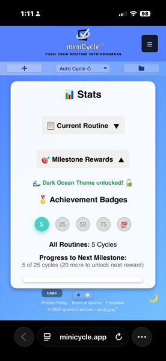
Performance Tracking
- Cycle Count: How many times you've completed this routine
- Tasks Completed: Total tasks you've checked off
- Progress Ring: Visual indicator of current cycle progress
Milestone Badges
Earn badges as you complete more tasks:
- 5 tasks: First milestone
- 25 tasks: Getting consistent
- 50 tasks: Building momentum
- 75 tasks: Dedicated user
- 100 tasks: Champion status
Theme Unlocks
Completing milestones unlocks new themes like Dark Ocean. Check the Stats Panel to see your progress toward the next unlock.
Gamification & Motivation
miniCycle includes motivational features to help maintain consistency:
- Cycle Counts: Track how many times you've completed each routine
- Milestone Badges: Earn achievements for completing tasks
- Progress Ring: Visual feedback on your current cycle
- Theme Rewards: Unlock new themes through consistent use
Customization
Dark Mode
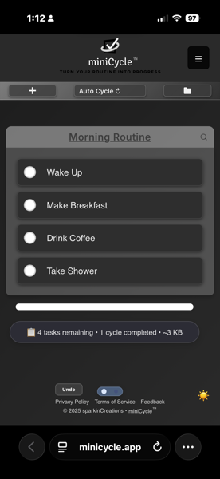
Toggle dark mode using the moon/sun icon in the lower right corner, or through Settings. Each theme has its own dark mode variant.
Themes
Choose from available themes in Settings → Theme. Unlock additional themes by reaching milestones.
Task Option Buttons
Customize which buttons appear on your tasks through the Customize (-/+) button:
- Show/hide individual options per routine
- Global settings for move arrows and three-dots menu
- Simplify the interface by hiding features you don't use
Responsive Design
miniCycle works seamlessly across devices — phone, tablet, or desktop. Your experience adapts to whatever screen you're using.
Data Management
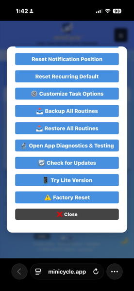
Privacy & Local Storage
All your data stays on your device. Nothing is sent to external servers, so your tasks and information remain completely private.
What is Local Storage?
Local storage is a feature built into your web browser that allows websites and apps to save data directly on your device. Unlike cloud-based apps that store your information on remote servers, miniCycle keeps everything in your browser's local storage — similar to how a native app stores data on your phone. This means:
- Your data never leaves your device
- No account or login required
- Works completely offline
- No one else can access your routines
Monitoring Storage Usage
You can check how much storage your routines are using in two ways:
- Status bar: The bottom of the task view shows the current routine's size (e.g., "~3 KB")
- Routine Switcher: Open the folder icon to see the Open Routine modal. Each routine displays its storage size, and at the bottom you'll see total usage like "9 KB / 9.91 MB used" — this shows how much of your browser's available local storage miniCycle is using
Storage Limits
Most browsers provide between 5-10 MB of local storage per website. miniCycle routines are lightweight (typically 1-5 KB each), so you can create hundreds of routines before approaching any limits. If you're concerned about storage, you can export routines as .mcyc files and delete ones you no longer need.
Export & Backup
- Download Routine: Export individual routines as .mcyc files
- Backup All Routines: Create a complete backup of all your data
- Share routine templates with friends or colleagues
Import & Restore
- Import Routine: Load a single .mcyc file
- Restore All Routines: Restore from a complete backup
Factory Reset
Clear all data and start completely fresh if needed. This action cannot be undone, so make sure to backup anything important first.
Advanced Features
Undo/Redo
Made a mistake? Use the undo button to reverse recent actions. Your undo history is preserved per routine.
Search & Filter
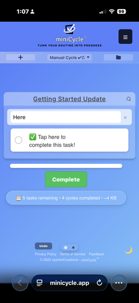
Use the search icon to filter tasks by name. A red indicator shows when a filter is active.
Three Dots Menu
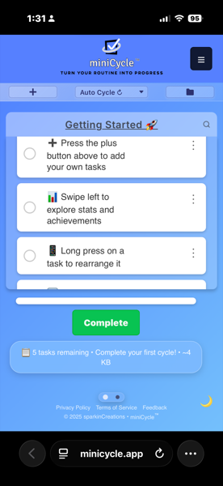
An alternative to long-press for accessing task options. Enable it in Settings or through Customize Task Options.
App Diagnostics
Run app health checks and view debug information through Settings → Open App Diagnostics & Testing.
Frequently Asked Questions
How do I rename a routine?
Tap on the routine title at the top of the task list, or use the rename option in the routine switcher.
What happens if I delete a routine?
Deleted routines cannot be recovered unless you have an exported backup file (.mcyc).
Can I use miniCycle offline?
Yes! miniCycle is a Progressive Web App (PWA) that works completely offline since all data is stored locally on your device.
How do I set up recurring tasks?
Long-press a task (or use three-dots menu) and tap the recurring icon. Choose your frequency and optional time settings.
Why aren't my notifications working?
Ensure that reminders are enabled for the task, and that your browser/device allows notifications from miniCycle.
How do I backup my data?
Use Settings → Backup All Routines to create a complete backup, or use the hamburger menu → Download Routine for individual routines.
Can I sync data between devices?
Not automatically — miniCycle is privacy-focused with no cloud sync. However, you can export from one device and import to another using .mcyc files.
What's the difference between priority and due dates?
Priority marks important tasks with a visual indicator (red border). Due dates set a specific deadline and can trigger reminders.
What's the difference between routines and cycles?
A routine is the persistent checklist you create. A cycle is one complete run-through of that routine. Your cycle count tracks how many times you've completed the routine.
Support
Found a Bug?
Use the feedback form in the app (hamburger menu → Send Feedback) to report issues or suggest improvements.
Feature Requests
Have an idea for a new feature? Send feedback through the in-app form — we read every submission.
Contact
For additional support: admin@sparkincreations.com
More Information
Visit minicycleapp.com for the latest updates and documentation.